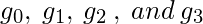

先决条件 - 数字系统和基本转换
格雷码系统是一个二进制数系统，其中每个成功的数字对只有一位不同。 它用于其中由硬件生成的正常二进制数序列在从一个数字转换到下一个数字期间可能产生错误或模糊的应用程序中。
例如，系统的状态可以从3（011）变为4（100）为-011-001-101-100。因此，当系统从初始状态改变时，很有可能读取错误的状态。到最后的状态。
这可能会对使用该信息的机器产生严重后果。 格雷码消除了这个问题，因为在两个数字之间的任何转换期间只有一位改变其值。
将二进制转换为格雷码 -
让 是表示二进制数的位，其中 是LSB和  是MSB，和
是MSB，和
让  是表示二进制数的格雷码的位，其中  是LSB和
是LSB和  是MSB。
是MSB。
转换的真值表是 - ![\begin{tabular}{||c|c|c|c||c|c|c|c||} \hline \multicolumn{4}{||c||}{Binary} & \multicolumn{4}{|c||}{Gray Code}\\ \hline b_3 & b_2 & b_1 & b_0 & g_3 & g_2 & g_1 & g_0 \\ \hline \hline 0 & 0 & 0 & 0 & 0 & 0 & 0 & 0 \\ \hline 0 & 0 & 0 & 1 & 0 & 0 & 0 & 1 \\ \hline 0 & 0 & 1 & 0 & 0 & 0 & 1 & 1 \\ \hline 0 & 0 & 1 & 1 & 0 & 0 & 1 & 0 \\ \hline \hline 0 & 1 & 0 & 0 & 0 & 1 & 1 & 0 \\ \hline 0 & 1 & 0 & 1 & 0 & 1 & 1 & 1 \\ \hline 0 & 1 & 1 & 0 & 0 & 1 & 0 & 1 \\ \hline 0 & 1 & 1 & 1 & 0 & 1 & 0 & 0 \\ \hline \hline 1 & 0 & 0 & 0 & 1 & 1 & 0 & 0 \\ \hline 1 & 0 & 0 & 1 & 1 & 1 & 0 & 1 \\ \hline 1 & 0 & 1 & 0 & 1 & 1 & 1 & 1 \\ \hline 1 & 0 & 1 & 1 & 1 & 1 & 1 & 0 \\ \hline \hline 1 & 1 & 0 & 0 & 1 & 0 & 1 & 0 \\ \hline 1 & 1 & 0 & 1 & 1 & 0 & 1 & 1 \\ \hline 1 & 1 & 1 & 0 & 1 & 0 & 0 & 1 \\ \hline 1 & 1 & 1 & 1 & 1 & 0 & 0 & 0 \\ \hline \hline \end{tabular}](../../../imgs/digital-logic/893ae5116201a2d82ed946847da75402.jpg "由QuickLaTeX.com呈现")
为了找到相应的数字电路，我们将使用K-Map技术将每个格雷码位作为输出，并将所有二进制位作为输入。
K-map for - 
K-map for  -
-
K-map for  -
- 
K-map for - 
灰色代码位的相应最小布尔表达式 -
相应的数字电路 - 
将格雷码转换为二进制 -
将灰色代码转换回二进制可以以类似的方式完成。
让 是表示二进制数的位，其中 是LSB和 是MSB，和
让 是表示二进制数的格雷码的位，其中 是LSB和 是MSB。
真相表 - ![\begin{tabular}{||c|c|c|c||c|c|c|c||} \hline \multicolumn{4}{||c||}{Gray Code} & \multicolumn{4}{|c||}{Binary}\\ \hline g_3 & g_2 & g_1 & g_0 & b_3 & b_2 & b_1 & b_0\\ \hline \hline 0 & 0 & 0 & 0 & 0 & 0 & 0 & 0 \\ \hline 0 & 0 & 0 & 1 & 0 & 0 & 0 & 1 \\ \hline 0 & 0 & 1 & 0 & 0 & 0 & 1 & 1 \\ \hline 0 & 0 & 1 & 1 & 0 & 0 & 1 & 0 \\ \hline \hline 0 & 1 & 0 & 0 & 0 & 1 & 1 & 1 \\ \hline 0 & 1 & 0 & 1 & 0 & 1 & 1 & 0 \\ \hline 0 & 1 & 1 & 0 & 0 & 1 & 0 & 0 \\ \hline 0 & 1 & 1 & 1 & 0 & 1 & 0 & 1 \\ \hline \hline 1 & 0 & 0 & 0 & 1 & 1 & 1 & 1 \\ \hline 1 & 0 & 0 & 1 & 1 & 1 & 1 & 0 \\ \hline 1 & 0 & 1 & 0 & 1 & 1 & 0 & 0 \\ \hline 1 & 0 & 1 & 1 & 1 & 1 & 0 & 1 \\ \hline \hline 1 & 1 & 0 & 0 & 1 & 0 & 0 & 0 \\ \hline 1 & 1 & 0 & 1 & 1 & 0 & 0 & 1 \\ \hline 1 & 1 & 1 & 0 & 1 & 0 & 1 & 1 \\ \hline 1 & 1 & 1 & 1 & 1 & 0 & 1 & 0 \\ \hline \hline \end{tabular}](../../../imgs/digital-logic/b10241408c09b07926fad83a711e0d86.jpg "由QuickLaTeX.com呈现")
使用K-map从格雷码中取回二进制位 -
K-map for - 
K-map for - 
K-map for - 
K-map for - 
相应的布尔表达式 -
![\begin{align*} b_0 &=g_3^\prime g_2^\prime g_1^\prime g_0 + g_3^\prime g_2^\prime g_1g_0^\prime + g_3^\prime g_2g_1^\prime g_0^\prime + g_3^\prime g_2g_1g_0 +g_3g_2^\prime g_1^\prime g_0^\prime + g_3g_2^\prime g_1g_0 \\ &\:\:\:+g_3g_2g_1^\prime g_0 + g_3g_2g_1g_0^\prime \\ &= g_3^\prime g_2^\prime( g_1^\prime g_0 + g_1g_0^\prime) + g_3^\prime g_2(g_1^\prime g_0^\prime + g_1g_0) +g_3g_2^\prime(g_1^\prime g_0^\prime + g_1g_0 )\\ &\:\:\:+g_3g_2 (g_1^\prime g_0 + g_1g_0^\prime) \\ &= g_3^\prime g_2^\prime(g_0\oplus g_1) + g_3^\prime g_2(g_0\odot g_1)+g_3g_2^\prime(g_0\odot g_1) + g_3g_2 (g_0\oplus g_1) \\ &= (g_0\oplus g_1)(g_2\odot g_3) + (g_0\odot g_1)(g_2\oplus g_3)\\ &= g_3\oplus g_2\oplus g_1\oplus g_0\\ b_1 &= g_3^\prime g_2^\prime g_1 + g_3^\prime g_2g_1^\prime + g_3g_2g_1 + g_3g_2^\prime g_1^\prime \\ &= g_3^\prime(g_2^\prime g_1 + g_2g_1^\prime) + g_3(g_2g_1 + g_2^\prime g_1^\prime) \\ &= g_3^\prime(g_2\oplus g_1) + g_3(g_2\odot g_1) \\ &= g_3\oplus g_2\oplus g_1\\ b_2 &= g_3^\prime g_2 + g_3g_2^\prime\\ &= g_3\oplus g_2\\ b_3 &= g_3 \end{align*}](../../../imgs/digital-logic/3e7bbdf812b93c83c69d291d841dcc03.jpg "由QuickLaTeX.com呈现")
相应的数字电路 -
参考文献 -
数字设计，莫里斯马诺和Michael Ciletti的第5版